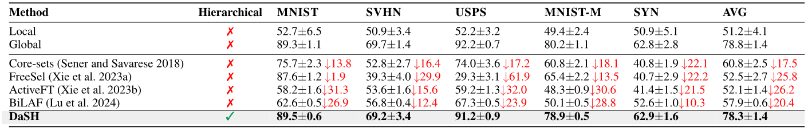
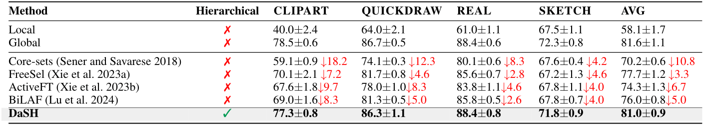
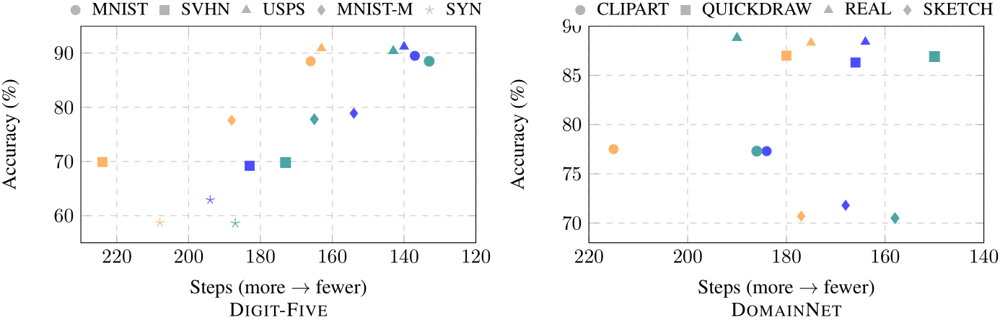

📝 Abstract
The success of modern machine learning hinges on access to high-quality training data. In many real-world scenarios, such as acquiring data from public repositories or sharing across institutions, data is naturally organized into discrete datasets that vary in relevance, quality, and utility. Selecting which repositories or institutions to search for useful datasets, and which datasets to incorporate into model training are therefore critical decisions, yet most existing methods select individual samples and treat all data as equally relevant, ignoring differences between datasets and their sources. In this work, we formalize the task of dataset selection: selecting entire datasets from a large, heterogeneous pool to improve downstream performance under resource constraints. We propose Dataset Selection via Hierarchies (DaSH), a dataset selection method that models utility at both dataset and group (e.g., collections, institutions) levels, enabling efficient generalization from limited observations. Across two public benchmarks (Digit-Five and DomainNet), DaSH outperforms state-of-the-art data selection baselines by up to 26.2% in accuracy, while requiring significantly fewer exploration steps. Ablations show DaSH is robust to low-resource settings and lack of relevant datasets, making it suitable for scalable and adaptive dataset selection in practical multi-source learning workflows.
💡 Contributions
- We formalize the task of dataset selection from a heterogeneous pool of external datasets, a setting common in real-world workflows such as public data acquisition and cross-institutional collaboration, where data is organized into discrete, variably relevant sources.
- We propose DaSH, the first dataset selection method that models dataset utility through hierarchical inference over groups and datasets, enabling efficient and robust selection under limited feedback.
- We benchmark DaSH against four state-of-the-art data selection methods across two public datasets, demonstrating consistent performance improvements, improves accuracy by up to 26.2% Digit-Five and 10.8\% on DomainNet. Ablation studies show DaSH remains robust to grouping noise and scales effectively to large dataset pools, whereas existing methods frequently select irrelevant or low-utility data samples.
DaSH Overview

Each dataset and its corresponding group are modeled using Gaussian distributions N(θi, σ̂i2) and N(μi, σi2) for datasets and dataset groups, respectively. The selection process involves choosing a dataset group, followed by a specific dataset within that group. Upon receiving a reward, the posterior distributions for the dataset and the dataset group are updated to N(μ′, σ′2) and N(θ′, σ̂′2) respectively. After training, dataset groups and datasets with higher posterior means are selected.
📊 Quantitative Results

Performance comparison on Digit-Five against baselines (averaged over 5 runs). Best performance is bold. Red downward arrows (↓) indicate absolute drops in accuracy relative to the best-performing method. Across all five domains, DaSH matches the global model, achieving an average accuracy of 78.3%, which is only 0.5% below the global upper bound (78.8%) and significantly higher than the local lower bound (51.2%).

Performance comparison on DomainNet against baselines (averaged over 5 runs). Best performance is bold. Red downward arrows (↓) indicate absolute drops in accuracy relative to the best-performing method. While performance margins are narrower than in Digit-Five DaSH still outperforms all baselines by 3.3–10.8%.

Pareto trade-offs between accuracy and selection cost. Each point is a method–domain result (Digit-Five left, DomainNet right). Marker shape encodes the domain, while color distinguishes the methods: DaSH-Flat, DaSH (mixed), and DaSH. Points toward the upper-right represent better trade-offs (higher accuracy, fewer steps). Across both benchmarks, the upper-right region is occupied by hierarchical variants, with DaSH contributing most of the frontier on Digit-Five and sharing the frontier with DaSH (mixed) on DomainNet.
🔎 Qualitative Examples

BibTeX
@inproceedings{xzhou2025dash,
title={Hierarchical Dataset Selection for High-Quality Data Sharing},
author={Zhou, Xiaona and Zeng, Yingyan and Jin, Ran and Lourentzou, Ismini},
booktitle={Proceedings of the AAAI Conference on Artificial Intelligence (AAAI)},
year={2026}
}